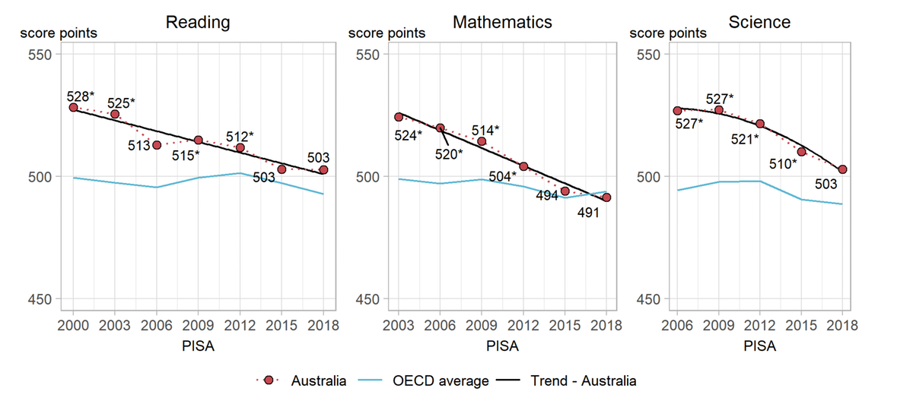

The goal of learningtower is to provide a user-friendly R package to provide easy access to a subset of variables from PISA data collected from the OECD, for the years 2000 - 2018, collected on a three year basis. This is an excellent dataset for exploring and visualizing data. This dataset can also be used for other analytically purposes as well as statistical computations.
What is PISA?
The Programme for International Student Assessment (PISA) is an international assessment measuring student performance in reading, mathematical and scientific literacy.
PISA assesses the extent to which 15-year-old students have acquired some of the knowledge and skills that are essential for full participation in society, and how well they are prepared for lifelong learning in the areas of reading, mathematical and scientific literacy.
In 2018, PISA involved 79 countries and 600,000+ students worldwide.
Read more about the Programme here.
Installation
You can install the learningtower package from CRAN with:
install.packages("learningtower")To install the development version of learningtower from GitHub use:
devtools::install_github("kevinwang09/learningtower")Data Description and Usage
The learningtower gives access to a subset of variables from PISA data originally collected and are available from OECD, for the years 2000 - 2018, collected on a three year basis.
The learningtower package contains mainly three datasets:
studentschoolcountrycode
This provides us with information about the students scores in mathematics, reading and science. Their school details, and which country they are from. Let’s have a look at how these datasets can be downloaded.
Student Dataset
The student dataset comprises of the scores from the triennial testing of 15-year-olds worldwide. In addition, this dataset contains interesting information on their parents qualifications, family wealth, gender, and possession of computers, internet, cars, books, rooms, desks, and similar other variables.
Keeping in mind the package’s size constraints. The package only includes a portion of student data, called the student subset data, this subset of student data is available for all the years when the PISA experiment took place. The full year wise student data set can be downloaded using the load_student() function included in this package.
As an example, we can load the student data as follows:
- The student subset dataset can be loaded as follows
library(learningtower)
#loading the student subset data for the year 2018
data(student_subset_2018)
head(student_subset_2018)
#> # A tibble: 6 × 22
#> # Groups: country [1]
#> year country school_id student_id mother_educ father_educ gender computer
#> <fct> <fct> <fct> <fct> <fct> <fct> <fct> <fct>
#> 1 2018 ALB 800059 805376 ISCED 3A ISCED 3A male yes
#> 2 2018 ALB 800084 802061 ISCED 3A ISCED 3B, C female yes
#> 3 2018 ALB 800093 800674 ISCED 3A ISCED 2 male yes
#> 4 2018 ALB 800278 803561 ISCED 2 ISCED 2 male yes
#> 5 2018 ALB 800055 801356 ISCED 3A ISCED 2 female <NA>
#> 6 2018 ALB 800279 804382 ISCED 3A ISCED 3A male yes
#> # … with 14 more variables: internet <fct>, math <dbl>, read <dbl>,
#> # science <dbl>, stu_wgt <dbl>, desk <fct>, room <fct>, dishwasher <fct>,
#> # television <fct>, computer_n <fct>, car <fct>, book <fct>, wealth <dbl>,
#> # escs <dbl>- The entire student data can be downloaded as follows:
#load the entire student data for a single year
student_data_2018 <- load_student(2018)
#load the entire student data for two/three years (2000, 2012, 2018)
student_data_2012_2018 <- load_student(c(2012, 2018))
student_data_2000_2012_2018 <- load_student(c(2000, 2012, 2018))
#load the entire student data
student_data_all <- load_student("all")See ?student_subset_2000 for information pertaining to variables captured.
School Dataset
The school dataset comprises school weight and other information such as the funding distribution of the schools, whether the school is private or public, the enrollment of boys and girls, the school size, and similar other characteristics of interest of different schools these 15-year-olds attend throughout the world.
#loading the school data
data(school)
head(school)
#> # A tibble: 6 × 13
#> year country school_id fund_gov fund_fees fund_donation enrol_boys
#> <fct> <fct> <fct> <dbl> <dbl> <dbl> <dbl>
#> 1 2000 ALB 01001 100 0 0 1191
#> 2 2000 ALB 01004 98 1 1 334
#> 3 2000 ALB 01005 91 5 2 403
#> 4 2000 ALB 01010 100 0 0 114
#> 5 2000 ALB 01013 0 50 30 250
#> 6 2000 ALB 01017 95 2 3 771
#> # … with 6 more variables: enrol_girls <dbl>, stratio <dbl>,
#> # public_private <fct>, staff_shortage <dbl>, sch_wgt <dbl>,
#> # school_size <dbl>See ?school for more information on the different variables present in the the school dataset.
Countrycode Dataset
The countrycode dataset contains mapping of the country ISO code to the country name. More information on the participating countries can be found here
#loading the countrycode data
data(countrycode)
head(countrycode)
#> # A tibble: 6 × 2
#> country country_name
#> <chr> <chr>
#> 1 AZE Azerbaijan
#> 2 ARG Argentina
#> 3 AUS Australia
#> 4 AUT Austria
#> 5 BEL Belgium
#> 6 BRA BrazilSee ?countrycode for more detailed information on the countries that participated in the PISA experiment.
Exploring the data
In the gif shown below, shows the weighted mean of mathematics scores of these 15 year old students for a few selected countries, this gif helps us observe changing of the scales over-highlights and the differences in the means between various countries in the different years.

Similarly, you can find more code examples and data visualizations for exploring
learningtowerthrough our vignettes and articlesFurther data exploration can be found in our articles exploring temporal trends here.
Citation
To cite the learningtower package, please use:
citation("learningtower")
#>
#> To cite package 'learningtower' in publications use:
#>
#> Kevin Wang, Paul Yacobellis, Erika Siregar, Sarah Romanes, Kim
#> Fitter, Giulio Valentino Dalla Riva, Dianne Cook, Nick Tierney and
#> Priya Dingorkar (2021). learningtower: Organisation for Economic
#> Co-operation and Development(OECD), Programme for International
#> Student Assessment (PISA) datasets in an easy-to-use format.
#> https://kevinwang09.github.io/learningtower/,
#> https://github.com/kevinwang09/learningtower.
#>
#> A BibTeX entry for LaTeX users is
#>
#> @Manual{,
#> title = {learningtower: Organisation for Economic Co-operation and Development(OECD), Programme for International Student Assessment (PISA) datasets in an easy-to-use format},
#> author = {Kevin Wang and Paul Yacobellis and Erika Siregar and Sarah Romanes and Kim Fitter and Giulio {Valentino Dalla Riva} and Dianne Cook and Nick Tierney and Priya Dingorkar},
#> year = {2021},
#> note = {https://kevinwang09.github.io/learningtower/, https://github.com/kevinwang09/learningtower},
#> }
Motivation for learningtower
- The PISA 2018 results were released on 3 December 2019. This led to wringing of hands in the Australian press, with titles of stories like Vital Signs: Australia’s slipping student scores will lead to greater income inequality and In China, Nicholas studied maths 20 hours a week. In Australia, it’s three.

Australia’s neighbours, New Zealand and Indonesia, are also worrying: New Zealand top-end in OECD’s latest PISA report but drop in achievements ‘worrying’, Not even mediocre? Indonesian students score low in math, reading, science: PISA report.
The data from this survey and all of the surveys conducted since the first collection in 2000, is publicly available. We decided to have made a more convenient subset of the data available in a new R package, called
learningtower
Acknowledgement
The work to make the data available is the effort of several researchers from Australia, New Zealand and Indonesia, conducted as part of the ROpenSci OzUnconf held in Sydney, Dec 11-13, 2019.